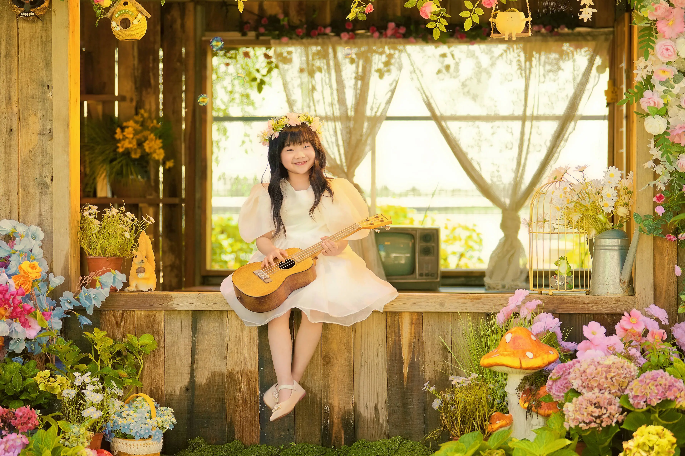
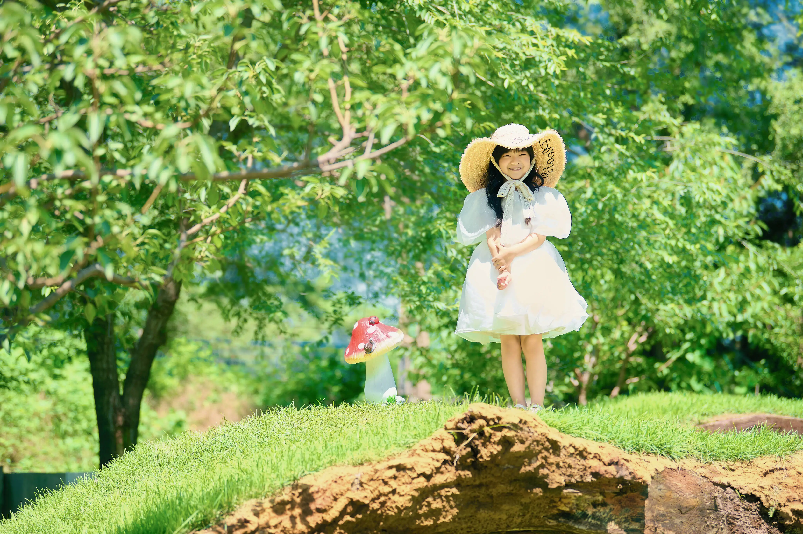
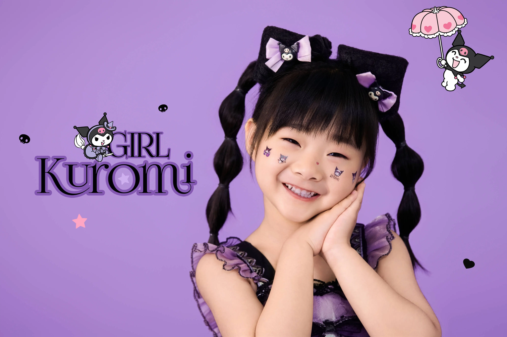
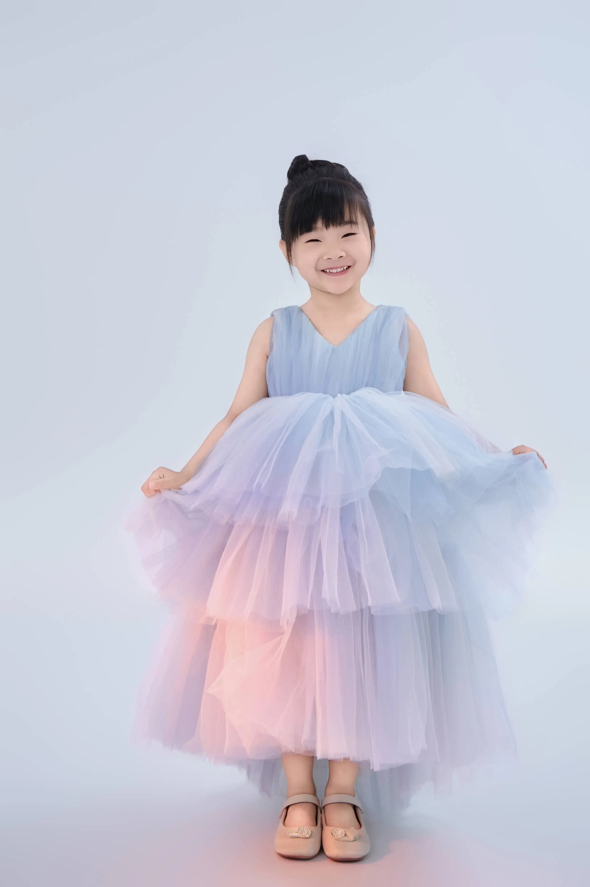

快乐的游戏时光

温馨的家庭时光
创意绘画时刻

温柔善良，擅长做各种美食，是Inny最亲密的伙伴
幽默风趣，喜欢陪Inny玩游戏，是家里的开心果

活泼可爱，充满好奇心，是家里的小天使
我们相信，家庭是孩子成长的最温暖港湾。我们希望通过这个网站，记录Inny的成长历程，分享我们的家庭故事，传递爱与温暖的力量。我们希望Inny能够在充满爱的环境中快乐成长，成为一个善良、自信、有爱心的人。
这里记录 Inny 的成长、家庭的温暖和日常的小闪光。每一条留言、每一次关注，都是这份记忆里很珍贵的一部分。
Follow, say hi, or send a note.